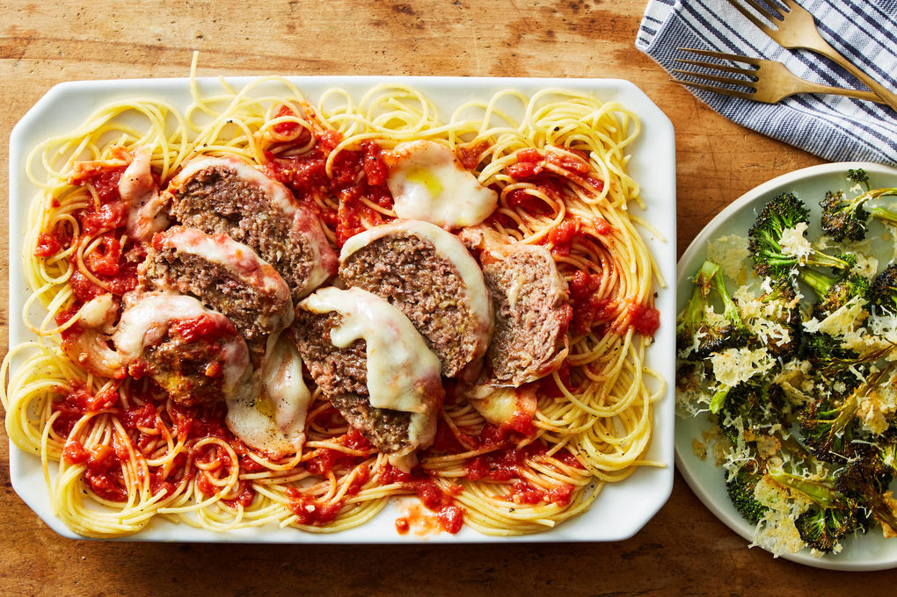

Monster Meatball Spaghetti

Al dente spaghetti topped with a monster meatball covered in homemade tomato sauce and mozzarella cheese.
Ingredients
- 1/2 lb spaghetti
- 1 can whole tomatoes
- 1 pkg mozzarella
- pizza spice (italian herbs, salt, pepper)
- Pinch of sugar
- 1 oz panko
- parmesan
- 1 large garlic clove
- 10 oz ground beef
- 1 large egg
Steps
- Preheat oven to 450 degrees fahrenheit with rack in the center. Bring a medium pot of salted water to a boil; keep warm over low heat. Peel and finely chop garlic. Grate all parmesan.
- Lightly oil a medium ovenproof skillet. In a bowl, combine beef, half of each Parmesan and garlic, 1/4 cup panko, 1 tsp of pizza spice and large egg, and pepper. Form into a 6-inch oval and place in prepared skillet. Transfer to oven and bake until lightly browned and just firm to the touch, 15 minutes.
- While meatball bakes, slice mozzarella. In a medium bowl, combine tomatoes and juices, remaining garlic, 1 tsp of pizza spice and oil, and a pinch of sugar. Use a fork to mash tomatoes and stir into a chunky sauce. Season to taste.
- Carefully pour off any fat from skillet with meatball. Spoon tomato sauce over meatball, then top with mozzarella. Bake on center oven rack until cheese is melted and tomato sauce is bubbling, and meatball is cooked to an internal temp of 165 degrees (about 15 minutes. Remove from oven and let stand 5 minutes.
- Add spaghetti to boiling water and cook, stirring occasionally, until al dente (10-12 minutes). Reserve 1/4 cooking water, drain pasta, and return to pot. Add reserved cooking water and 1 tablesppon each of butter and oil. Cook over low heat, stirring, until butter melts (1-2 minutes. Season to taste. Slice meatball parm and serve over pasta.